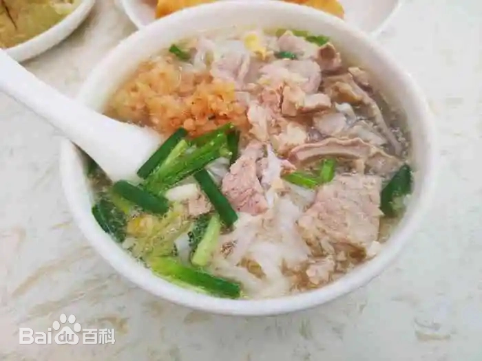
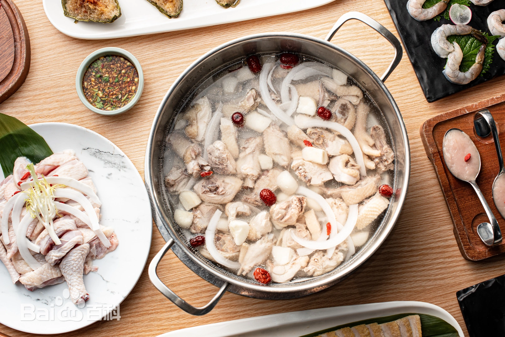
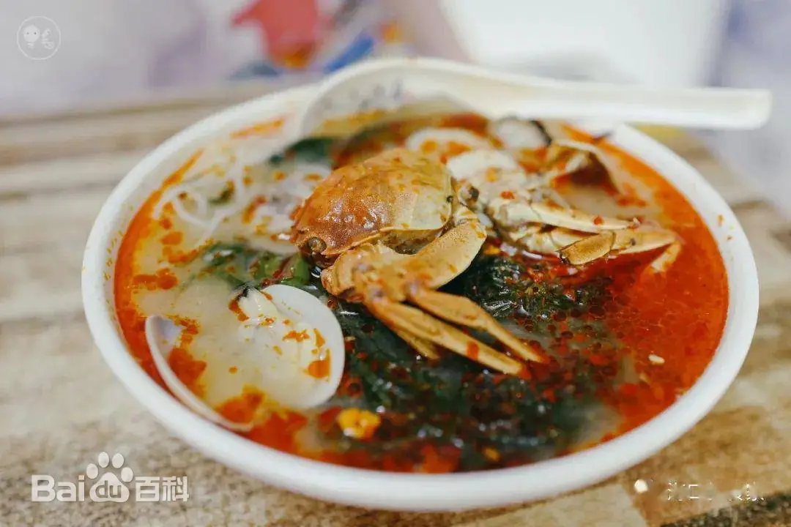
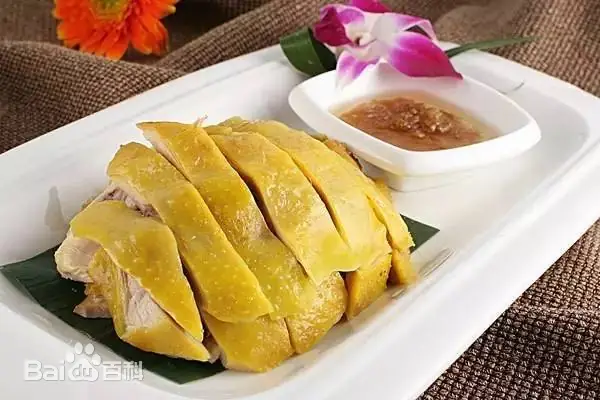
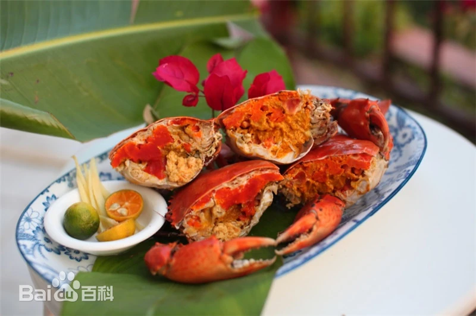

海南粉：鲜香滑嫩,海南粉的米粉质地细腻、柔软而富有弹性，入口即化，口感滑嫩。 酸爽开胃，海南粉通常会加入一些酸菜或者酸豆角，这些酸味的配料使得整道菜更加开胃，带有一丝丝的酸爽感。 香辣可口，在海南粉的调料中，常常会加入一些辣椒，使得米粉带有适度的辣味，刺激味蕾，增加食欲。 酱香浓郁，海南粉的调料中还会加入特制的酱料，这些酱料通常包含多种香料和调味品，使得米粉带有浓郁的酱香味。 肉香四溢，海南粉中常常加入一些腌制过的肉类，如猪肉、牛肉等，这些肉类的加入使得米粉更加鲜美，肉香四溢。
后安粉：将粉条和葱花，加上一个土鸡蛋，配与猪肚，大肠，小肠等等，再注入滚烫浓香的后安汤，一碗千里飘香的后安粉就制作好了。 保证让你流连忘返，吃了还想吃，一般的食客都会将汤底，汤汁完全的“吸收”掉，因为实在是太好吃了。
椰子鸡：椰子是椰树的果实，其汁清如水，甜似蜜，晶莹剔透，清凉解渴； 椰子汁的风味独特，既有荸荠的味道，又在甜中带有椰香，具有解渴去暑，生津利尿之功效， 多用于治疗中暑或发高烧等热病；菜品中的仔鸡性平不燥，配以椰子汁、椰肉，肉香味美，椰味芬芳，汤清爽口，补中有清，风味独特， 共成益气生津，清热补虚之剂；适用于年老体衰，疲倦无力，烦热口渴等症。
糟粕醋:海南省文昌市铺前镇的一种传统小吃，采用民间酿酒过程中产生的酒糟发酵产生的酸醋作为汤料，外加蔬菜（如石葱） 、海菜、动物内脏、脆骨、蟹籽、蚵类等做成的一种小吃。辅料配以辣椒、糖、蒜末等。味道微辣酸甜可口，可作为餐前开胃小吃、或者正餐时食用。
白斩鸡:形状美观，皮黄肉白，肥嫩鲜美，滋味异常鲜美，十分可口，肉色洁白皮带黄油，具有葱油香味，葱段打花镶边，食时佐以姜蓉、蒜泥、酱油，保持了鸡肉的鲜美、原汁原味，食之别有风味。
和乐蟹：和乐蟹的传统食法多样，万宁人是喜欢清水煮熟后切块，配以优质的佐料（调味品），佐料的原料是以蒜茸飞姜茸、酱油、桔子、胡椒粉为底料， 再加入适量的醋、酱油，成了和乐蟹传统的调味品，慢慢品尝切成小块的蟹醮，回味无穷。如今， 随着人们生活水平的不断提高，人们更加讲究健康餐饮，并注入内涵丰富的美食文化， 对和乐蟹的饮食制作有更深入的研究。如：“清蒸和乐蟹”、“金炒和乐蟹”、“鲍汁蒜茸蒸和乐蟹”， 还有用和乐蟹制作的名菜“酥炒蟹块”、“金桂蟹黄”、“香汁炒蟹”、“蟹肉扒鲜茹”等10多道菜，深受人们喜爱。其中，清蒸和乐蟹已经成为国级菜。